Abstract
3D human-object interaction (HOI) anticipation aims to predict the future motion of humans and their manipulated objects, conditioned on the historical context. Generally, the articulated humans and rigid objects exhibit different motion patterns, due to their distinct intrinsic physical properties. However, this distinction is ignored by most of the existing works, which intend to capture the dynamics of both humans and objects within a single prediction model. In this work, we propose a novel Costrong>ntact-costrong>nsistent decoupstrong>led Distrong>ffusion Tstrong>ransformer framework (CoopDiT), which employs two distinct DiT branches to decouple human and object motion modeling, with human-object contact points as shared anchors to bridge the motion generation across branches. The human branch aims to predict articulated human dynamics and contact points by modeling human multi-joint kinematics. The object branch generates center-point object motion, followed by physical laws of rigid transformation to derive rigid object dynamics and contact points. We then align the contact predictions across branches with a consistency constraint, ensuring coherent human-object dynamics modeling. To further enhance human-object consistency and prediction reliability, we propose human-to-object manipulation module to guide object motion modeling. Extensive experiments on the BEHAVE and Human-Object Interaction datasets demonstrate that our CoopDiT outperforms state-of-the-art methods.
Visualizations on the Human-object Interactions predicted by CoopDiT
I. Visualizations on the Short-term Prediction
CoopDiT can predict reasonable and realistic Human-object Interactions. The historical HOIs are in gray, and the predictions are in color.
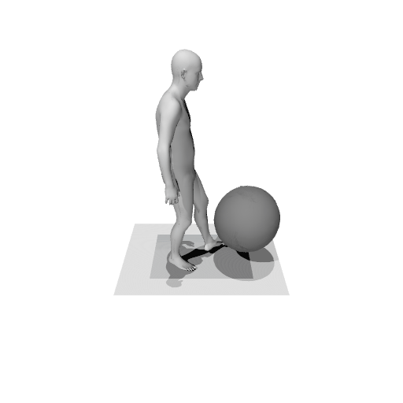
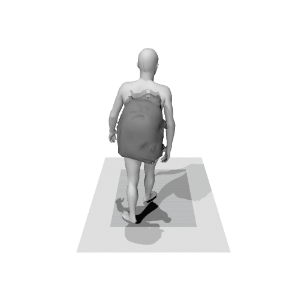
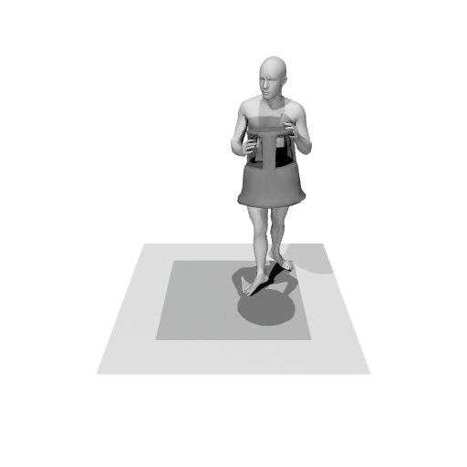
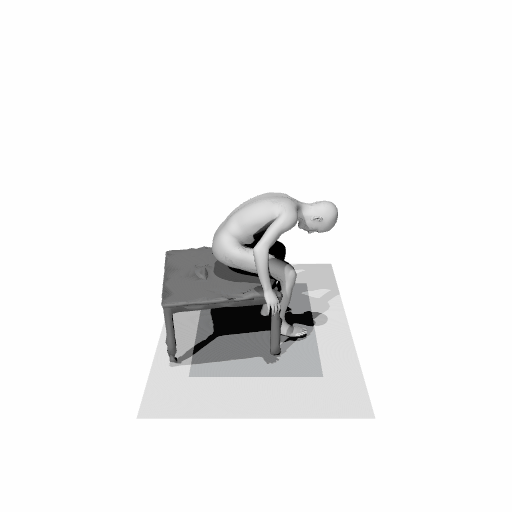
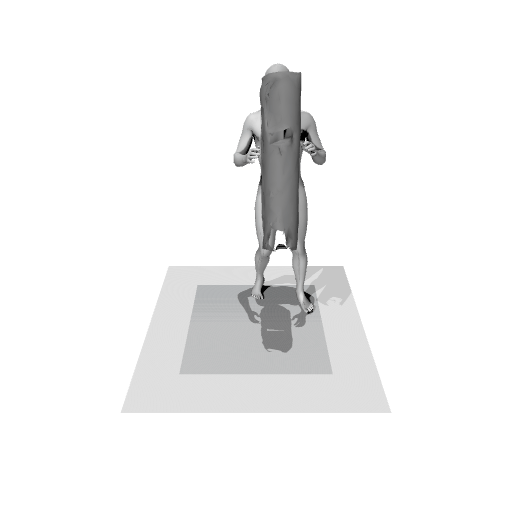
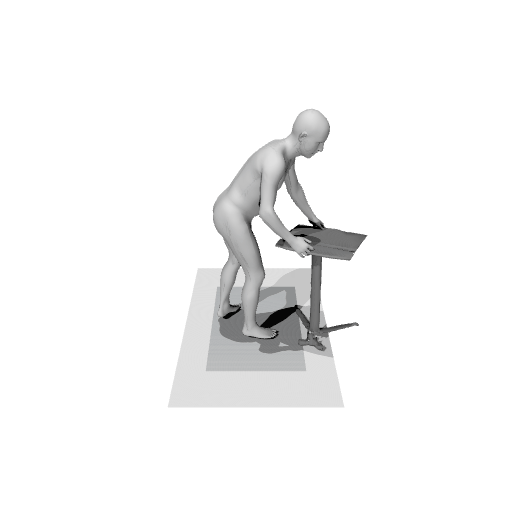
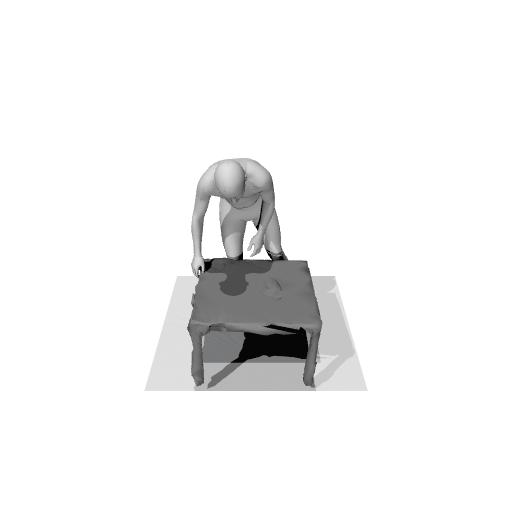
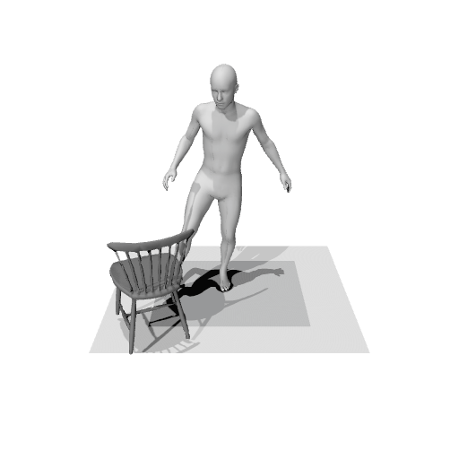
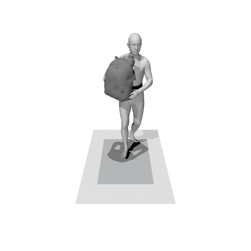
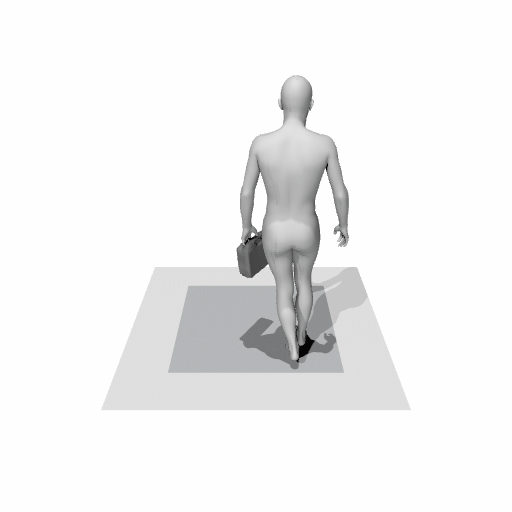
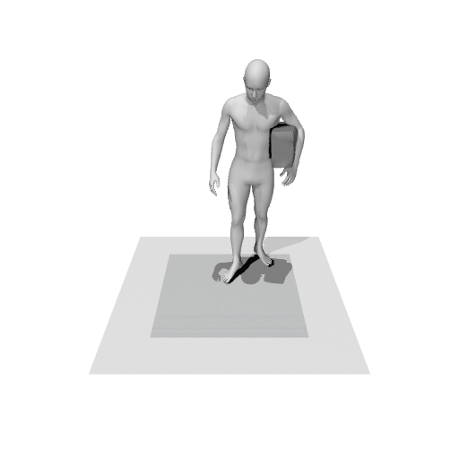
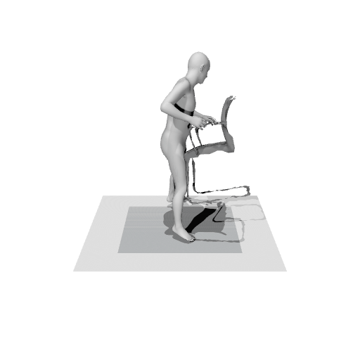
II. Visualizations on the Long-term Prediction
CoopDiT can predict reasonable and realistic Human-object Interactions, even in the long-term prediction setting (autoregressively predict 100 future frames based on the past 10 frames). The historical HOIs are in gray, and the predictions are in color.
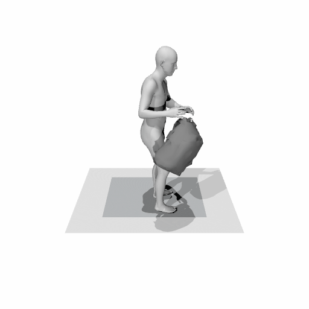
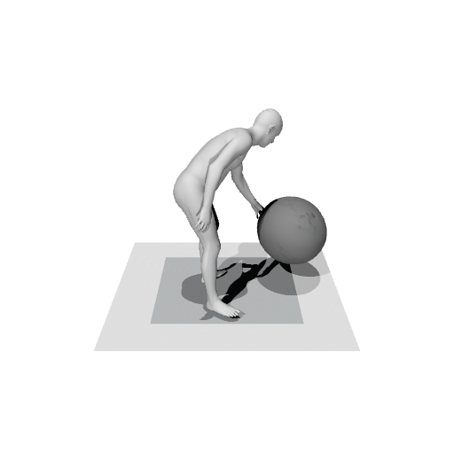
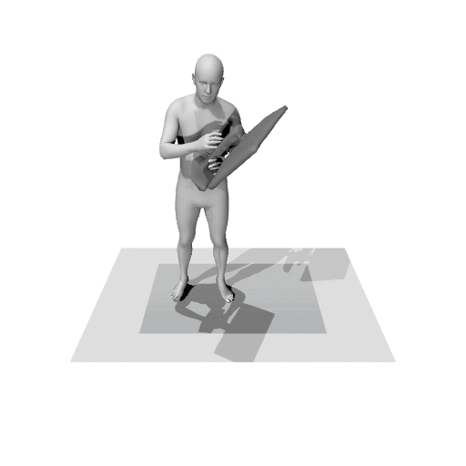
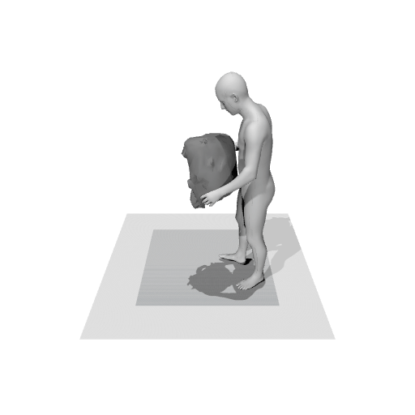
III. Visual Comparisons with the Current State-of-the-Art Method
CoopDiT predicts more reasonable and realistic Human-object Interactions, with fewer cases of mesh interpenetration and object floating artifacts compared to InterDiff. The historical HOIs are in gray, and the predictions are in color.
InterDiff
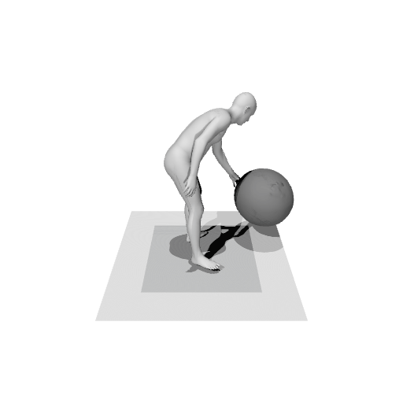
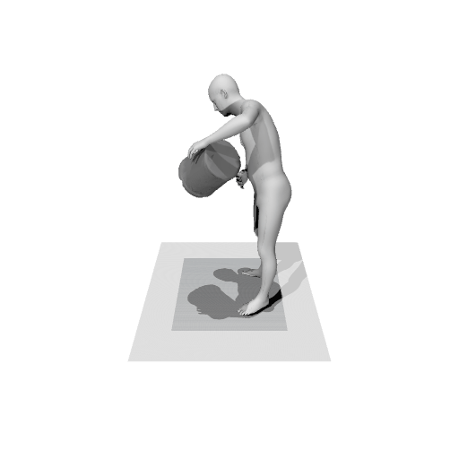
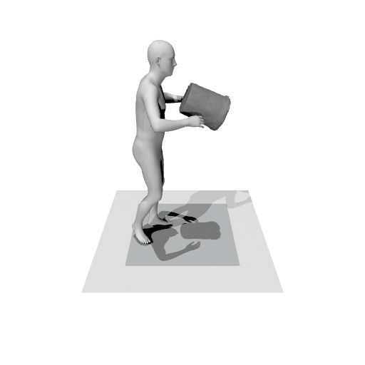
CoopDiT (Ours)

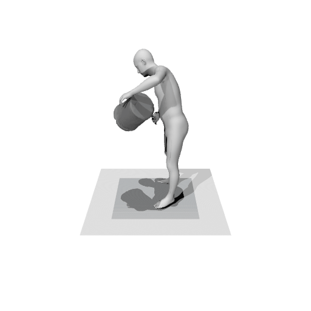
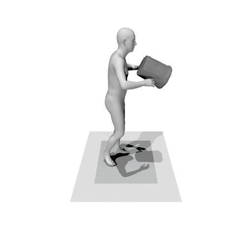
Poster
BibTeX
@article{YourPaperKey2024,
title={Your Paper Title Here},
author={First Author and Second Author and Third Author},
journal={Conference/Journal Name},
year={2024},
url={https://your-domain.com/your-project-page}
}